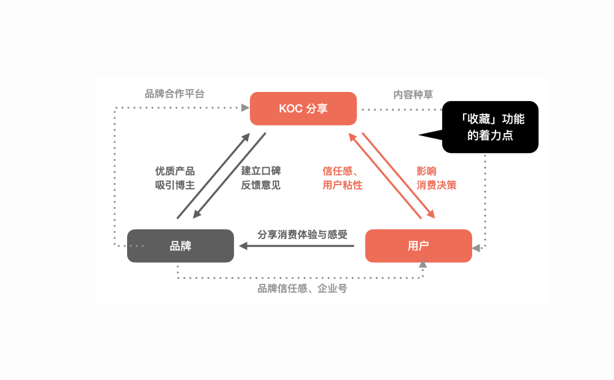
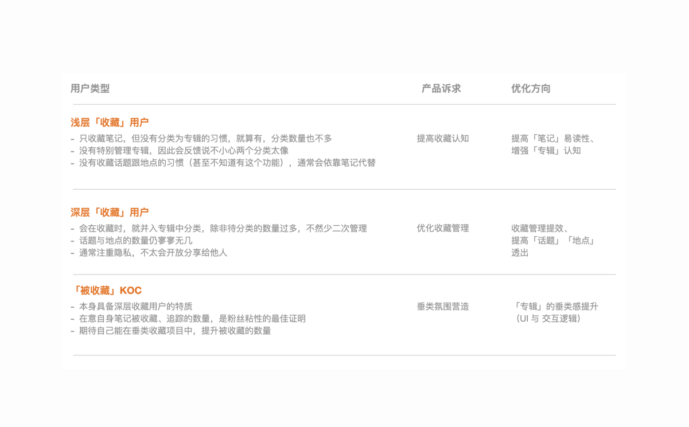
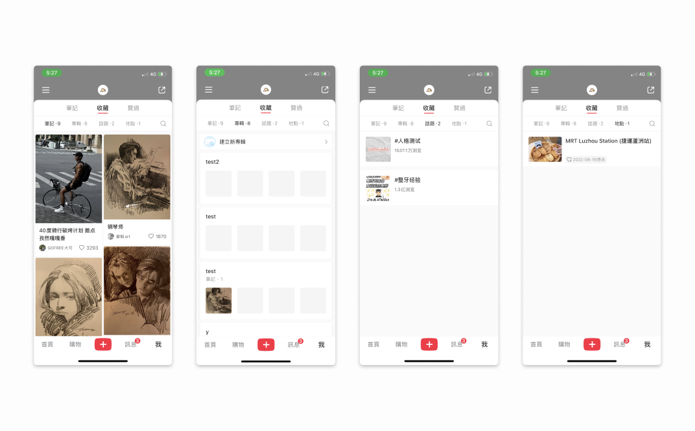
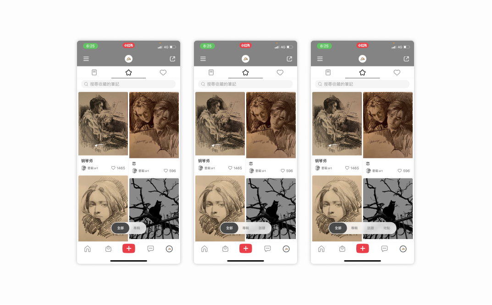
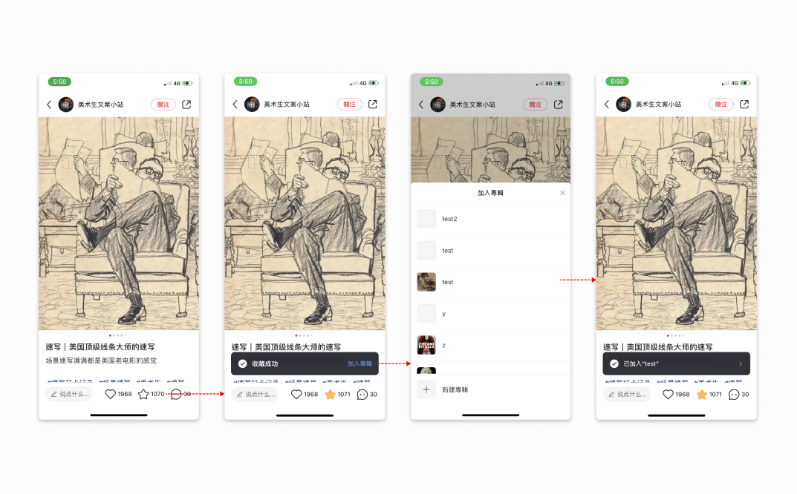
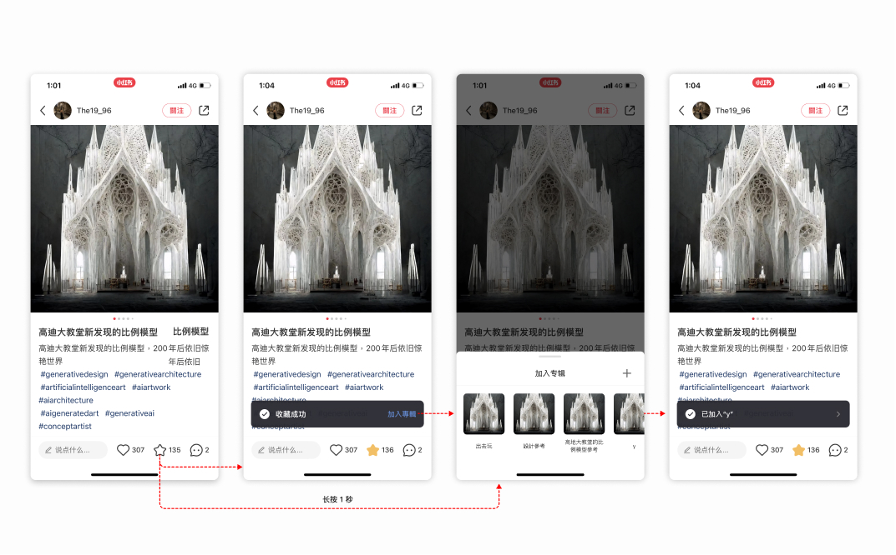
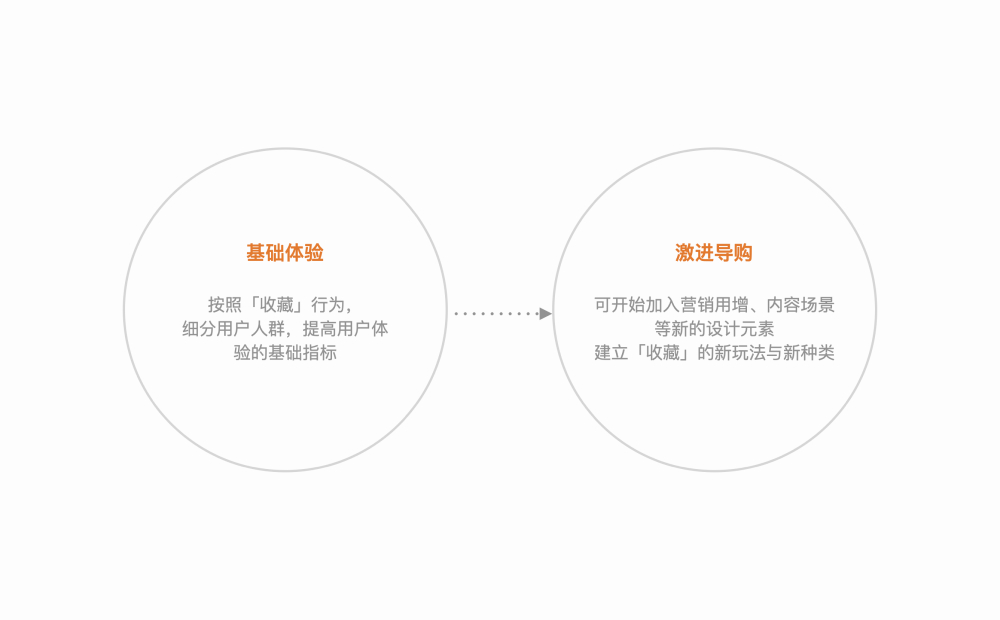

little red book re-design / 小红书
Side project
In order to optimize the experience of personal small books, the red small books designed for the personal small book exhibition activity this time are specially designed and used red envelopes from personal assignments, which are used for testing and using specific activities, and are only used for design verification. Ability to demonstrate the purpose of a personal speech.
為個人發起的優化設計專案，起源來自於自己使用小紅書的體驗觀感，針對個人操作習慣重新設計小紅書這款軟體的交互與視覺，並未使用定性定量進行驗證，僅展示初步提案的能力。
Role
Designer
Collaborators
Me, myself & I
Duration
2022
XiaoHongShu user features
Xiaohongshu has more than 200 million monthly active users, and the user group has a unique feature: the boundary between buyers (general users) and KOC (Key opinion customer) is blurred, and most of the buyers themselves are buyers, so on the interface , "Favorites" and "Following" can be said to be the longest tail functions at present.
小紅書具有超過2億的月活用戶，用戶群體具有一個獨特的特徵：購買者（一般用戶）與KOC(Key opinion customer)界線模糊，大部分帶貨者本身也是購買者，因此在介面上，「收藏」與「關注」可以說是目前最長尾的功能。

☝🏻 XiaoHongShu user features
Design concept
For the two actions of "favorite" and "follow", the cognitive walkthrough method is used to define the design direction with three types of users. A total of 5 optimization directions have been sorted out:
👉🏻Improve the readability of the "Notes" function
👉🏻Improve the awareness of the "Album" function
👉🏻The management of "Favorites" needs to be improved
👉Increase the exposure of "Topics" and "Locations"
👉🏻The vertical sense of the "Album" page has been improved
👉🏻Improve the readability of the "Notes" function
👉🏻Improve the awareness of the "Album" function
👉🏻The management of "Favorites" needs to be improved
👉Increase the exposure of "Topics" and "Locations"
👉🏻The vertical sense of the "Album" page has been improved
針對「收藏」與「關注」兩個動作，經過 cognitive walkthrough 方法，搭配三種類型的用戶框定設計方向。總共整理 5 種優化方向：
👉🏻提高「筆記」功能的易讀性
👉🏻提高對「專輯」功能的認知
👉🏻「收藏」的管理有待提升
👉🏻增加「話題」、「地點」的透出
👉🏻「專輯」版面的垂類感提升
👉🏻提高「筆記」功能的易讀性
👉🏻提高對「專輯」功能的認知
👉🏻「收藏」的管理有待提升
👉🏻增加「話題」、「地點」的透出
👉🏻「專輯」版面的垂類感提升

☝🏻 How I made design concept
Favorite - Floating tab bar
Using the "floating tab button" to replace the original top button has several advantages:
👉🏻Avoid blocking the text and provide a more quiet visual perception
👉🏻In line with the thumb theory (The thumb zone), users Easier to operate
👉🏻Avoid blocking the text and provide a more calm visual perception
👉🏻It is expandable, and it can be well compatible when the collection item is not opened, or when the collection category is added in the future
👉🏻Avoid blocking the text and provide a more quiet visual perception
👉🏻In line with the thumb theory (The thumb zone), users Easier to operate
👉🏻Avoid blocking the text and provide a more calm visual perception
👉🏻It is expandable, and it can be well compatible when the collection item is not opened, or when the collection category is added in the future
使用「懸浮 tab 按鈕」取代原先的頂部按鈕，其具有幾個優點：
👉🏻避免遮擋內文，提供更沉靜式的視覺觀感
👉🏻符合拇指理論(The thumb zone)，用戶操作更容易
👉🏻避免遮擋內文，提供更沉靜式的視覺觀感
👉🏻具有擴充性，在未開通該收藏項目，或未來增設收藏類別時，都能很好的相容
👉🏻避免遮擋內文，提供更沉靜式的視覺觀感
👉🏻符合拇指理論(The thumb zone)，用戶操作更容易
👉🏻避免遮擋內文，提供更沉靜式的視覺觀感
👉🏻具有擴充性，在未開通該收藏項目，或未來增設收藏類別時，都能很好的相容

☝🏻 XiaoHongShu original interface
☝🏻 XiaoHongShu new interface

☝🏻 Expandable component
Add to Favorites
The original "Add to Favorites" process will pull up a half-screen category for users to choose. This time, the pull-up panel is changed to a horizontal sliding style, which has two advantages:
👉🏻The interactive hot area is concentrated, which is more in line with the thumb area
👉🏻The representative picture of the category is enlarged, which is helpful for visual recognition
👉🏻The original operation logic is to click "Favorites" first, then you can choose the category to join. This time, it is optimized to long press for 1 second, and you can directly pull up the join panel.
👉🏻The interactive hot area is concentrated, which is more in line with the thumb area
👉🏻The representative picture of the category is enlarged, which is helpful for visual recognition
👉🏻The original operation logic is to click "Favorites" first, then you can choose the category to join. This time, it is optimized to long press for 1 second, and you can directly pull up the join panel.
原「加入最愛」的流程會拉起半屏的類別，讓使用者選擇。本次將上拉面板改為橫滑樣式，其具備兩個優點：
👉🏻交互熱區集中，更符合拇指領域
👉🏻類別的代表圖片增大，有助於視覺辨識
👉🏻原操作邏輯為先點擊「最愛」，才可選擇加入的類別，本次優化為長按 1 秒，即可直接拉起加入面板
👉🏻交互熱區集中，更符合拇指領域
👉🏻類別的代表圖片增大，有助於視覺辨識
👉🏻原操作邏輯為先點擊「最愛」，才可選擇加入的類別，本次優化為長按 1 秒，即可直接拉起加入面板

☝🏻 orinal UI style

☝🏻 new frame for user to choose category
Create a category
Retyped the collection interface, with the following changes
👉🏻 Merge the "New Album" entry into the upper tab, and online use the "New Album" entry as the preference in the feed below. The level is less obvious, so it is optimized
👉🏻Added the "All Collections" category, only the notes of the loaded albums are included online. Although "All Collections" is coupled with "All", it is still necessary (refer to competing products)
👉🏻Reorganize the album layout ,The original thumbnail is too small, through this 3-picture layout, the image recognition rate can be greatly increased, and the same screen effect can be retained
👉🏻 Merge the "New Album" entry into the upper tab, and online use the "New Album" entry as the preference in the feed below. The level is less obvious, so it is optimized
👉🏻Added the "All Collections" category, only the notes of the loaded albums are included online. Although "All Collections" is coupled with "All", it is still necessary (refer to competing products)
👉🏻Reorganize the album layout ,The original thumbnail is too small, through this 3-picture layout, the image recognition rate can be greatly increased, and the same screen effect can be retained
將收藏介面重新排版，有以下改動
👉🏻將「新建專輯」入口併入上方 tab，線上將「新建專輯」入口作為下方 feed 中的首選項，層級上較不明顯，故優化
👉🏻新增「全部收藏」類別，線上僅收錄有載入專輯的筆記，「全部收藏」雖與「全部」耦合，仍有其必要（參考競品）
👉🏻重整專輯排版,原縮圖過小，透過這種 3 圖式排版，可大幅增加圖片識別率，且保留同等屏效
👉🏻將「新建專輯」入口併入上方 tab，線上將「新建專輯」入口作為下方 feed 中的首選項，層級上較不明顯，故優化
👉🏻新增「全部收藏」類別，線上僅收錄有載入專輯的筆記，「全部收藏」雖與「全部」耦合，仍有其必要（參考競品）
👉🏻重整專輯排版,原縮圖過小，透過這種 3 圖式排版，可大幅增加圖片識別率，且保留同等屏效

☝🏻 Re-design new brand vision & web banner
☝🏻 The new creating process
Edit favorites
The original structure is: management, menu (including sharing and editing), and after optimization, the sharing and editing in the menu are decoupled.
原先的結構為：管理、菜單（含分享與編輯），優化後將菜單中的分享與編輯解耦開。
☝🏻 Re-design edit favorites process
Next step
The next step in basic experience optimization should improve the relationship between collections and the mall, and aim to reduce the conversion funnel
基礎體驗優化的下一步，應提升收藏與商城的關聯，目標降低漏斗。
